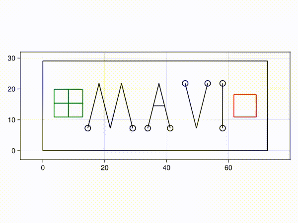

Mavi.jl
Mavi is a Particle Dynamics Engine.

See the code that generated this video here: examples/welcome_video.jl
Its goal is to provide a common structure for implementing particle dynamics simulations, allowing users to use default behaviors or create their own as needed.
Here are some Mavi.jl features:
Pairwise interactions, such as Lennard-Jones or Harmonic-Truncated potentials.
Spaces with different geometries, such as rectangular or circular.
Spaces with different wall types, such as rigid, periodic or dynamic (walls that exert forces on the particles).
Quantity calculators, such as kinetic and potential energy.
Experiment system to collect data from simulations.
Visualization:
Real-time rendering of simulations using Makie.
Video generation of simulations.
Image generation of simulations.
In addition to the core Mavi module, there is a module named Mavi.Rings, which implements active rings — a model used in this paper: "Segregation in Binary Mixture with Differential Contraction among Active Rings" by Teixeira, E., et al (Physical Review Letters, 2025).
- Check out
Mavi.jlexamples here. Animations of these examples can be seen here. - Latest blog post: How to use the Rings system